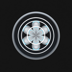
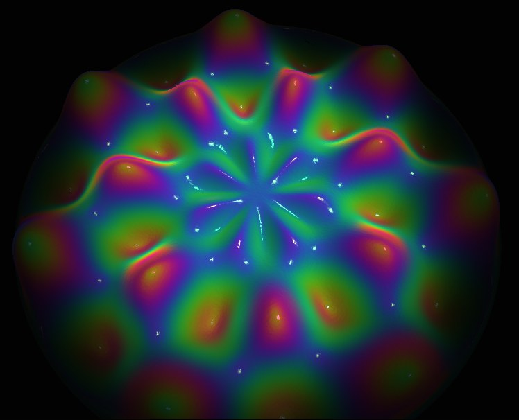
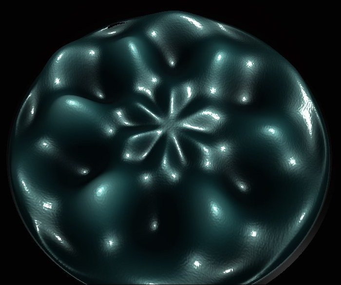
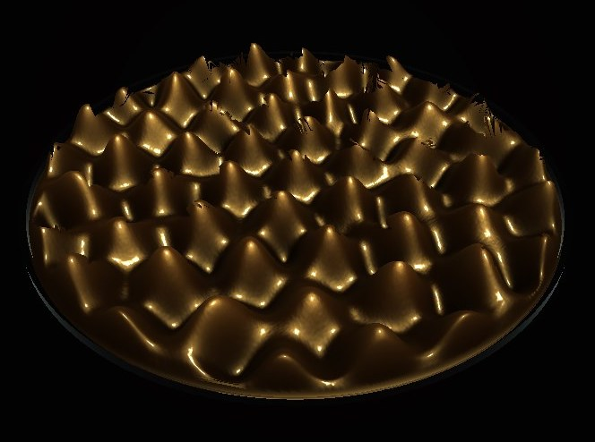
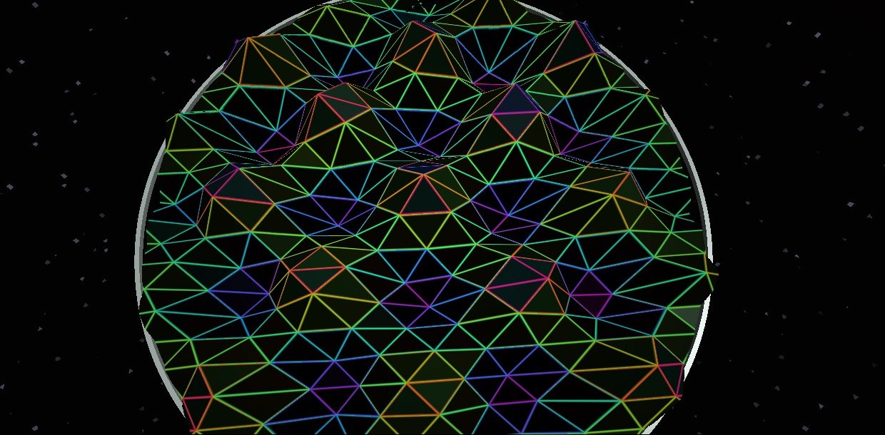
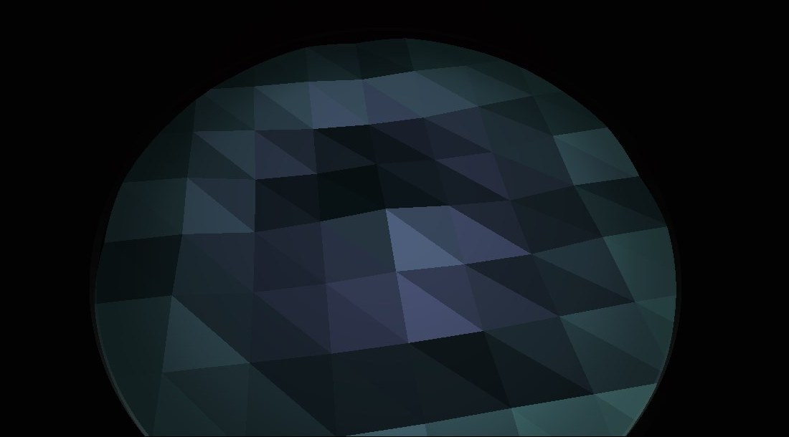

Cymatic
Cameron S Humphries
Cymatic is a Windows app by Cameron S Humphries. Interactive Windows cymatics and music visualiser that turns PC audio into water patterns. A steady pitch locks the dish. Silence lets the water settle.
Download Cymatic on Microsoft Store




What it can do
Cymatic is a music visualiser. The picture is the water. Put sound on and the surface moves with it. Hold a note and it locks into rings, petals, and grids.
- PC sound reads the audio already playing through the speakers and follows its pitch and loudness.
- A built-in tone lets you set the pitch and the volume yourself.
- A steady pitch locks the dish. Silence lets the water settle.
- Drive, settle, wave speed, stroke, pitch follow, loudness follow, overtone, amplitude, crests, light, and ambient.
- Colours: Water, Ink, Gold, Iridescent, Galaxy, Aurora, Ember, and Blood.
- Surface: normal, low poly, wireframe, or dots.
- Perimeter: glass, a ring, a fade, or none. Radius can be changed.
- Drag to orbit, scroll to zoom, right-drag to slide. Full screen is available.
- Reset water and reset camera put the dish and the view back.
Water cymatics visualizer for Windows
Unlike a conventional music spectrum visualizer that displays bars or waveforms, Cymatic visualizes sound through an interactive dish of water. It responds to pitch and loudness from PC audio or its built-in tone generator, creating rings, petals, grids and other patterns.
You can orbit and zoom the view, customize the appearance, and use it in full screen. No microphone, account or subscription is required.
PC sound
If you choose PC sound, the app reads the audio already playing through your speakers so the dish can follow the pitch and loudness. That audio is used on this computer while the window is open. It is not recorded, not saved, and not transmitted.
Tone
The built-in tone is generated on this computer. You set the pitch and the volume. Preset pitches are 48 rings, 96 petals, 190 hex, and 420 grid.
On your PC
Cymatic runs on 64-bit Windows 10 version 2004 (build 19041) or later, including Windows 11. Sliders, colours, and the other controls are saved on this PC so they are still there the next time you open the app. They stay on this PC.
There is no account and no sign-in. Cymatic does not show ads, does not include analytics, and does not send what you do to Cameron S Humphries or to anyone else. It is sold on the Microsoft Store. Microsoft processes the payment.
FAQ
What is Cymatic?
Cymatic is a Windows app by Cameron S Humphries. It is an interactive Windows cymatics and music visualiser that turns PC audio or a generated tone into water patterns.
What can Cymatic do?
It follows pitch and loudness from the PC speakers or from a built-in tone. A steady pitch locks the dish. Silence lets the water settle. You can set drive, settle, wave speed, stroke, overtone, amplitude, crests, light, and ambient. Colours are Water, Ink, Gold, Iridescent, Galaxy, Aurora, Ember, and Blood. The surface can be normal, low poly, wireframe, or dots. The perimeter can be glass, a ring, a fade, or none. You can orbit, zoom, slide, and use full screen.
Does Cymatic record audio from my PC?
No. If you choose PC sound, Cymatic reads the audio already playing through the speakers while the window is open. That audio is not recorded, not saved, and not transmitted.
Does Cymatic need an account?
No. There is no sign-in. Cymatic does not show ads and does not include analytics. Settings stay on the PC.
Which versions of Windows run Cymatic?
Cymatic runs on 64-bit Windows 10 version 2004 (build 19041) or later, including Windows 11.
Where can I download Cymatic?
Download Cymatic from the Microsoft Store. On Windows, open that link in your browser or the Store app, then select Get or Install.
How much does Cymatic cost?
Cymatic is a one-time purchase for USD $0.99 on the Microsoft Store. There is no subscription and no in-app purchases. Microsoft processes the payment; your local price is shown on the Store listing before you buy.